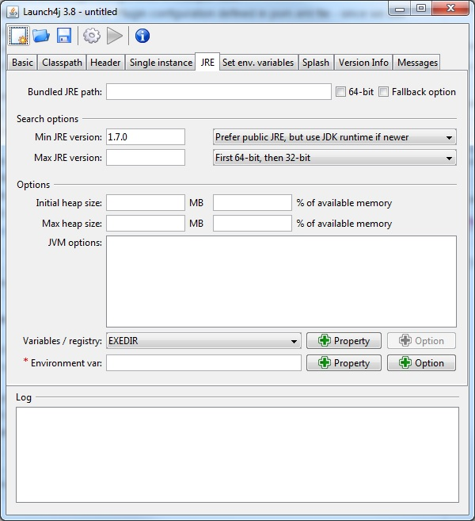

How to integrate RED with Robotframework Maven Plugin
- Download from launch4j
applicable for your OS package - we will use launch4j-3.8-win32.zip
(it is standalone version, which requires only unzip)
- Run launch4j.exe GUI application
- In Basic tab set Output file: to be jython.exe
application, the location and select Dont't wrap the jar,
launch only.

- In Classpath tab switch on Custom classpath and set Main
class: to org.python.util.jython.
In Edit item: put robotframework*.jar and press Accept button.
Repeat this to add %RF_JAR% variable.


- In Header tab just switch Header type from GUI to
Console.

- In JRE tab put in Min JRE version value 1.7.0.

- In main menu press Build wrapper (gear icon). The
application will ask you for save configuration, it is required - the
name of configuration and place where it will be located is optional.
- If everything was done ok you will be able to see in Log text
area information about Successfully created file.

The created jython.exe file has to two possibilities to set robotframework*.jar
location:
- via already set variable %RF_JAR% you can set it in System
Variables
- using jar located in the same directory where jython.exe file
is present
The last test before integration with RED - is to test if
executable file was compiled ok and will work.
Execute in command line:
set RF_JAR=D:\userdata\RED\Desktop
set RF_JAR=C:\Users\RED\.m2\repository\org\robotframework\robotframework\3.0\robotframework-3.0.jar
jython.exe -m robot.run --version
If output looks like: Robot Framework 3.0 (Jython 2.7.0 on java1.*) it means that you can
integrate jython.exe with RED.
To integrate jython.exe with RED:
- put jython.exe file to bin directory. It can be
anywhere, but parent folder must be named as bin - i.e. C:\bin\
- It is easier to copy robotframework*.jar to this bin
directory instead of set RF_JAR environment variable
- run eclipse.exe or RED.exe depends on which RED
version you are using
- go to
Window -> Preferences -> Robot Framework -> Installed frameworks
- click Add... button and select bin directory from 1.
- if everything is ok, information about Robot Framework
version should be visible
- when you will create RED project or execute Clean\Build, you
should see in Robot Standard libraries standard libraries like i.e.
BultIn with information about keywords, which they contains.